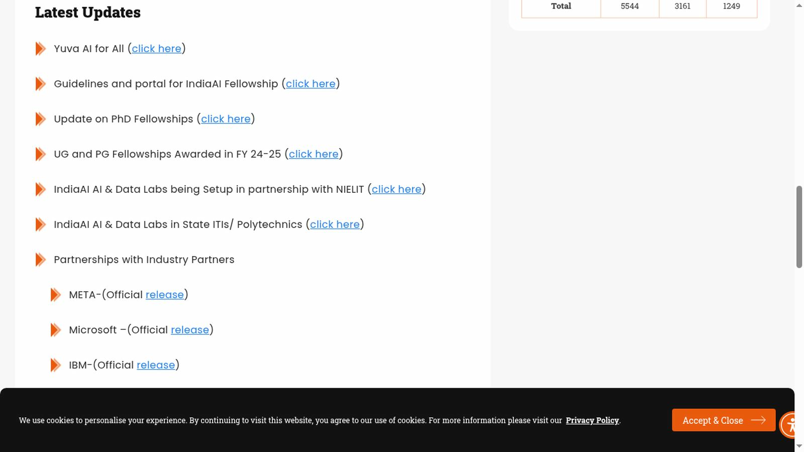
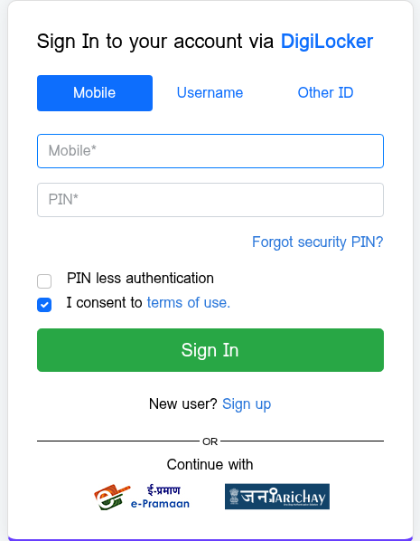

IndiaAI Fellowship 2026-27: up to Rs 2 lakh, eligibility and how to apply
IndiaAI Fellowship AY2026-27 applications close 30 November 2026 on the official portal. UG/IDD support is up to ₹1 lakh; PG support ranges up to ₹1 lakh, ₹1.5 lakh or ₹2 lakh depending on the starting semester. This recheck covers the current guidelines and DigiLocker student entry, not a completed application. Read the PG eligibility wording conflict below before applying.
Official artwork hosted by IndiaAI (indiaai.gov.in). Independent guide, not affiliated or sponsored. Artwork and trademarks belong to their owners.
Scoped recheck 24 October 2026: current AY26-27 guidelines, public portal eligibility, announcement, privacy and student sign-in route checked. No personal sign-in, document upload, application, award or payment was tested.
What the fellowship offers
The current AY26-27 guidelines offer eligible UG and five-year integrated dual degree students up to ₹1 lakh in two ₹50,000 tranches. PG support depends on the semester of enrolment and selection: first semester up to ₹2 lakh in four tranches, second semester up to ₹1.5 lakh in three, and third semester up to ₹1 lakh in two. These are maximums, not an automatic award or monthly UG/PG stipend. Later tranches require the specified grades and an endorsed project-progress report; support can be withheld if eligibility is not maintained.
The guidelines normally consider 10 UG/PG fellows per institute per year and describe evaluation/approval on a first-come-first-served basis. Conference support is conditional and one-time, not a general extra ₹1 lakh for every student. The PDF refers to paper/project acceptance at international conferences organised by publishers with H5 index above 100, covering registration/travel/accommodation; the public portal instead describes an AI conference with h5 rating above 100. Read the indicative list and seek confirmation for your conference rather than assuming every overseas presentation qualifies.
The PIB release describes an expansion to 13,500 scholars (8,000 UG, 5,000 PG and 500 PhD) across diverse disciplines. That programme-wide number is not a promise of places still available in this application window.
Who can apply
The public portal limits applications to Indian nationals studying full-time and undertaking AI or related projects. Its semester boundaries match the announcement: three-year UG from the fifth semester after second-year results, four-year UG from the seventh after third-year results, five-year IDD from the ninth after fourth-year results, and PG semesters one, two or three.
- UG/IDD: the current PDF requires overall CGPA 7.0/70% or equivalent through the last completed semester. The portal's UG summary says last-semester marks, while its IDD panel says overall marks. Do not assume a single strong semester overrides the cumulative requirement.
- PG: first-semester applicants need UG overall CGPA 7.0/70% or equivalent. Second/third-semester applicants need that UG result AND at least 7.0/70% through the latest completed PG semester.
- Data/AI courses: the PDF requires three completed courses. Where the formal curriculum lacks them, it also accepts at least three external Data/AI courses, such as NPTEL, with completion certificates. The portal's short summary only mentions three full-time AI courses.
PG wording needs confirmation: the portal allows confirmed PG admission across disciplines, but the PDF's PG section says students should pursue AI-related disciplines and also contains an academic-status paragraph referring to final-year UG/IDD. These official texts do not fully agree. Ask the portal helpdesk or your guide/nodal officer about your course before relying on general eligibility wording. This guide does not determine individual eligibility.
Deadline
The live portal's 16 October 2026 announcement says applications for AY2026-27, including UG, PG, IDD and PhD, close on 30 November 2026. The official announcement also gives this date. Use the current official portal notice and apply early. We did not establish a specific closing hour.
How to apply: step by step
Public route rechecked on 24 October 2026. No personal sign-in or submission was attempted.
- Open the official fellowship portal, read the AY26-27 guidelines and check your category, semester, grades and courses with your institute.
- Prepare scanned marksheets, relevant course-completion certificates, a photo, the signed/stamped endorsement on official letterhead and student-bank-account proof. The portal lists a GATE scorecard as optional for PG. Use the current category-specific PDF/checklist for final document requirements.
- Choose Student Login. The observed route now redirects to DigiLocker through MeriPehchaan; it is not the older IndiaAI Gmail/LinkedIn/email screen. Check the real domain and consent screen before providing personal information.
- Complete the form and guide/institute review in your own sign-in, then keep the submission confirmation. These private fields and workflow were not tested here.
The guidelines say applicants cannot independently reopen or revise a submitted form. A designated guide/nodal officer may return it for necessary corrections; that does not extend the deadline. Documents emailed instead of submitted through the portal are not considered.


Video guides
We searched YouTube on 21 October 2026 for a step-by-step application video for the IndiaAI Fellowship 2026-27 in English and in Malayalam. We could not verify one that matches this cycle, so we are not linking any rather than risk outdated or unrelated instructions.
PhD applicants
The current guideline PDF and portal now include PhD applications on the same fellowship portal. The institute must onboard through an approved nodal officer before eligible scholars apply. Freshly admitted or first-year full-time PhD scholars must have AI as a substantive research component. Do not assume the simpler UG/PG project-grant rules cover this route.
For the general PhD route, the PDF ties the threshold to the entry qualification: UG CGPA/CPI 8.0 or equivalent for direct bachelor-entry, or PG 7.5 or equivalent for postgraduation-entry; for a five-year dual degree with separate results, the PG component is considered. It separately provides a 55% qualifying-examination route for Medical, Life, Social and Behavioural Sciences applicants. The portal summary is shorter, so read the PDF and obtain institute confirmation.
Approved PhD support is ₹70,000/month in PhD years one/two, ₹75,000 in year three and ₹80,000 in years four/five, with tenure measured from PhD admission, not award date. The contingency grant is for the host institution, ₹2 lakh per completed 12-month period subject to conditions, including institute overheads capped at 10%/₹20,000 per year. Selection is not guaranteed: institutes may shortlist up to five eligible applications per cycle. Concurrent scholarship/fellowship/stipend/salary for the same PhD is prohibited; transfers require cessation of prior support and approval. Continued support depends on progress and eligibility; excess payments after ineligibility can be recovered. Research IP follows host-institution policies and applicable law. Read the full PhD terms before accepting.
Documents, data and completion conditions
The portal privacy policy describes identifying documents, academic records, bank details and usage/cookie data. It retains data as needed and may keep it for legal, archive, recovery and backup purposes, without a fixed deletion deadline. It offers access/update and consent-withdrawal rights through its grievance contact; withdrawing consent may prevent use. Third-party sign-in services have their own terms. We did not audit data flows or test deletion.
For UG/PG badge/certificate/felicitation after completion, the PDF lists proof of dataset submission to AIKosh, a signed completed-project report and final grades. AIKosh submissions have their own data guidelines. Do not upload private or unlicensed datasets without checking those rules. These requirements are not evidence that every applicant receives a certificate or award.
Frequently asked questions
Is this only for engineering students?
No. The government release covers diverse disciplines. However, the PG course wording differs between the portal and current PDF; check the eligibility section and confirm your course with the scheme or institute.
What is the last date to apply?
30 November 2026 per the official announcement. Check the portal for the final word.
Can first-year PG students apply?
The announcement lists PG semesters 1, 2 and 3 as eligible.
Did AiCoN submit an application?
No. This is a researched guide, not a completed application or verified selection.
Sources: Press Information Bureau release on India-AI Impact Summit 2026 initiatives · Official IndiaAI fellowship announcement · IndiaAI FutureSkills page · IndiaAI Fellowship portal. Checked 21 October 2026. · Current AY26-27 guidelines · Current portal announcement · Portal privacy policy. Scoped recheck 24 October 2026.